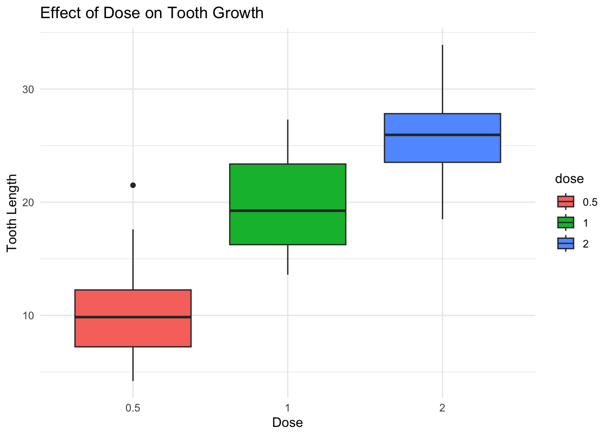

This report presents an ANOVA analysis of the ToothGrowth dataset in R. We consider the ToothGrowth dataset from the biomedical research domain. It explores how different dosages of Vitamin C and supplement types affect tooth growth in guinea pigs. We examine the effect of dose levels and supplement type on tooth length. The analysis includes:
Exploratory Data Analysis (EDA)
Assumption Testing (Normality & Homogeneity of Variance)
One-Factor and Two-Factor ANOVA
Post-hoc Comparisons (Tukey’s HSD)
Conclusions & Interpretations
Exploratory Data Analysis (EDA)
# **Introduction**
The `ToothGrowth` dataset in R contains **60 observations** measuring the **effect of Vitamin C on tooth growth in guinea pigs**. The experiment was conducted using **two supplement types** at **three different dose levels**.
Description of Variables
Variable
Description
len
Tooth length (numeric)
supp
Supplement type (VC for Vitamin C, OJ for Orange Juice)
dose
Dose level of supplement (numeric, but often treated as categorical: 0.5, 1, 2 mg)
# Data Loading and Preparation# Load necessary librarieslibrary(ggplot2)library(car)library(dplyr)# Load the datasetdata("ToothGrowth")# Create a local copytooth_data <- ToothGrowth# Convert dose and supp to factorstooth_data$dose <-as.factor(tooth_data$dose)tooth_data$supp <-as.factor(tooth_data$supp)# View summary statisticssummary(tooth_data)
len supp dose
Min. : 4.20 OJ:30 0.5:20
1st Qu.:13.07 VC:30 1 :20
Median :19.25 2 :20
Mean :18.81
3rd Qu.:25.27
Max. :33.90
Boxplots help us visualize the distribution of tooth length (len) across different dose levels and supplement types (supp). Below, we will explain what these boxplots tell us about the data.
# Boxplot of Tooth Length by Doseggplot(tooth_data, aes(x = dose, y = len, fill = dose)) +geom_boxplot() +labs(title ="Effect of Dose on Tooth Growth", x ="Dose", y ="Tooth Length") +theme_minimal()

# Boxplot of Tooth Length by Supplement Typeggplot(tooth_data, aes(x = supp, y = len, fill = supp)) +geom_boxplot() +labs(title ="Effect of Supplement Type on Tooth Growth", x ="Supplement Type", y ="Tooth Length") +theme_minimal()
Each boxplot represents a dose group (0.5 mg, 1 mg, 2 mg).
The median (middle line in the box) increases as the dose increases.
The spread (interquartile range, IQR) of tooth length measurements is larger at higher doses.
The presence of outliers (dots outside the whiskers) suggests some guinea pigs responded more strongly than others.
Conclusion:Higher doses generally lead to greater tooth growth.
Assumption Testing (Normality & Homogeneity of Variance)
Before performing ANOVA (Analysis of Variance) on the ToothGrowth dataset, we need to check two key assumptions:
Normality – The data should be approximately normally distributed within each group.
Homogeneity of Variance (Homoscedasticity) – The variance should be similar across all groups.
1. Testing for Normality
Why?
• ANOVA assumes that the dependent variable (len = tooth length) is normally distributed within each group.
• If this assumption is violated, the F-test may not be valid.
• However, ANOVA is robust to mild deviations from normality when sample sizes are large.
# Perform Shapiro-Wilk test for normalityshapiro_result <-shapiro.test(tooth_data$len)# Print formatted resultscat("\n------------------------------------------\n")
# Interpretation based on p-valueif (shapiro_result$p.value >0.05) {cat("\n\nConclusion: The p-value is greater than 0.05, so we fail to reject the null hypothesis.\n")cat("This suggests that the data follows a normal distribution. ✅\n")} else {cat("\n\nConclusion: The p-value is less than 0.05, so we reject the null hypothesis.\n")cat("This suggests that the data significantly deviates from a normal distribution. ❌\n")}
Conclusion: The p-value is greater than 0.05, so we fail to reject the null hypothesis.
This suggests that the data follows a normal distribution. ✅
• Null Hypothesis (H₀): The data is normally distributed.
• Alternative Hypothesis (H₁): The data is not normally distributed.
• If p > 0.05, fail to reject H₀ → Data is normal (assumption holds).
• If p < 0.05, reject H₀ → Data is not normal (assumption violated).
2. Testing for Homogeneity of Variance
Why?
• ANOVA assumes equal variances across all groups.
• If variances differ significantly, F-test results may be biased.
Method: Levene’s Test
# Load necessary librarylibrary(car)# Perform Levene's Test for Doselevene_dose <-leveneTest(len ~ dose, data = tooth_data)# Perform Levene's Test for Supplementlevene_supp <-leveneTest(len ~ supp, data = tooth_data)# Print formatted resultscat("\n------------------------------------------\n")
------------------------------------------
cat(" LEVENE'S TEST FOR HOMOGENEITY OF VARIANCE \n")
# Interpretation for Doseif (levene_dose$"Pr(>F)"[1] >0.05) {cat("\n\nConclusion: The p-value is greater than 0.05, so we fail to reject the null hypothesis.\n")cat("This suggests that the variance is equal across different dose groups. ✅\n")} else {cat("\n\nConclusion: The p-value is less than 0.05, so we reject the null hypothesis.\n")cat("This suggests that the variance differs significantly across dose groups. ❌\n")}
Conclusion: The p-value is greater than 0.05, so we fail to reject the null hypothesis.
This suggests that the variance is equal across different dose groups. ✅
# Print results for Supplementcat("\n\nüìå Testing Variance Across Supplement Types:\n")
# Interpretation for Supplementif (levene_supp$"Pr(>F)"[1] >0.05) {cat("\n\nConclusion: The p-value is greater than 0.05, so we fail to reject the null hypothesis.\n")cat("This suggests that the variance is equal across supplement types (OJ & VC). ✅\n")} else {cat("\n\nConclusion: The p-value is less than 0.05, so we reject the null hypothesis.\n")cat("This suggests that the variance differs significantly across supplement types. ❌\n")}
Conclusion: The p-value is greater than 0.05, so we fail to reject the null hypothesis.
This suggests that the variance is equal across supplement types (OJ & VC). ✅
Both dose (p < 0.001) and supplement type (p = 0.000429) are significant. Unlike in the one-factor model, supplement type is now significant when controlling for dose.
Interpretation: Dose and supplement type are both highly significant (p < 0.001). The interaction effect (dose:supp) is also significant (p = 0.02186), meaning the effect of dose depends on the supplement type.
Summary of ANOVA Results
Model
Significant Factors
Interpretation
One-Factor ANOVA (Dose)
✅ Dose (p < 0.001)
Higher doses significantly increase tooth growth.
One-Factor ANOVA (Supplement)
❌ Supplement (p = 0.0604)
Supplement type alone is not a strong predictor.
Two-Factor ANOVA (Dose + Supplement)
✅ Dose (p < 0.001), ✅ Supplement (p = 0.0004)
Both factors influence tooth growth, but dose has a stronger effect.
The interaction plot helps to determine how the effect of dose on tooth growth depends on supplement type (OJ vs. VC).
# Generate interaction plotggplot(tooth_data, aes(x = dose, y = len, color = supp, group = supp)) +stat_summary(fun = mean, geom ="point", size =3) +stat_summary(fun = mean, geom ="line") +labs(title ="Interaction Plot: Effect of Dose and Supplement on Tooth Growth",x ="Dose (mg)", y ="Mean Tooth Length", color ="Supplement Type") +theme_minimal()
X-Axis: Dose levels (0.5 mg, 1 mg, 2 mg).
Y-Axis: Mean tooth length for each dose.
Red Line → Orange Juice (OJ).
Blue Line → Vitamin C (VC).
Data Points: Each dot represents the mean tooth length for that dose and supplement type.
Lines Connecting Points: Indicate the trend in tooth growth across increasing doses.
# Compute summary statistics (mean & standard error)summary_data <- tooth_data %>%group_by(dose, supp) %>%summarise(mean_len =mean(len),se =sd(len) /sqrt(n()) # Standard Error )# View summary data#print(summary_data)# Bar plot with error barsggplot(summary_data, aes(x = dose, y = mean_len, fill = supp)) +geom_bar(stat ="identity", position =position_dodge(), width =0.6) +geom_errorbar(aes(ymin = mean_len - se, ymax = mean_len + se),width =0.2, position =position_dodge(0.6)) +labs(title ="Effect of Dose and Supplement Type on Tooth Growth",x ="Dose (mg)", y ="Mean Tooth Length (mm)", fill ="Supplement Type" ) +theme_minimal()
This bar plot represents mean tooth length for different doses of OJ (red) and VC (blue). Error bars represent standard errors, showing the variability of measurements. This visualization complements the interaction plot by providing a clearer view of mean values and their variability.
Key Observations from the Bar Plot
OJ results in greater tooth growth at lower doses:
• At 0.5 mg, OJ (~13 mm) results in significantly higher tooth growth than VC (~8 mm).
• At 1 mg, OJ (~22 mm) is still more effective than VC (~16 mm).
At 2 mg, the difference disappears:
• Both supplements result in similar tooth growth (~26 mm), confirming that dose dominates the effect at higher levels.
The error bars show some variation:
• The standard errors indicate how much individual measurements fluctuate within each dose group.
• Higher doses show slightly more variability, but the trend remains strong.
Post-hoc Comparisons (Tukey’s HSD)
Tukey’s Honest Significant Difference (HSD) test is a post-hoc test used after ANOVA to identify which specific groups differ significantly from each other. It controls for multiple comparisons and ensures family-wise confidence at 95%.
All dose comparisons are statistically significant (p < 0.05). Increasing dose significantly increases tooth growth.
1 mg leads to a 9.13 mm increase over 0.5 mg.
2 mg leads to a 15.50 mm increase over 0.5 mg.
2 mg leads to a 6.37 mm increase over 1 mg.
Conclusion: Higher doses always result in significantly more tooth growth.
Tukey’s HSD for Supplement Type (supp factor)
Comparison
Difference (diff)
Lower Bound (lwr)
Upper Bound (upr)
Adjusted p-value (p adj)
Significance
VC - OJ
-3.7
-5.58
-1.82
0.0002312
Significant
OJ results in significantly greater tooth growth than VC (p < 0.001). The mean difference is 3.7 mm in favor of OJ.
Conclusion: OJ is more effective than VC at promoting tooth growth.
Tukey’s HSD for Dose & Supplement Interaction (dose:supp)
Comparison
Difference (diff)
Lower Bound (lwr)
Upper Bound (upr)
Adjusted p-value (p adj)
Significance
1:OJ - 0.5:OJ
9.47
4.67
14.27
0.0000046
Significant
2:OJ - 0.5:OJ
12.83
8.03
17.63
0.0000000
Significant
0.5:VC - 0.5:OJ
-5.25
-10.05
-0.45
0.0242521
Significant
2:VC - 0.5:OJ
12.91
8.11
17.71
0.0000000
Significant
0.5:VC - 1:OJ
-14.72
-19.52
-9.92
0.0000000
Significant
1:VC - 1:OJ
-5.93
-10.73
-1.13
0.0073930
Significant
0.5:VC - 2:OJ
-18.08
-22.88
-13.28
0.0000000
Significant
1:VC - 2:OJ
-9.29
-14.09
-4.49
0.0000069
Significant
2:VC - 2:OJ
0.08
-4.72
4.88
1.0000000
Not Significant
All comparisons involving dose show a significant difference (p < 0.05), except for 2:VC - 2:OJ (p = 1.000), meaning that: OJ is more effective than VC at lower doses and at 2 mg, OJ and VC are equally effective.
Key Comparisons:
OJ at 1 mg is significantly better than OJ at 0.5 mg (p = 0.0000046).
OJ at 2 mg is significantly better than OJ at 0.5 mg (p = 0.0000000).
OJ at 2 mg is significantly better than VC at 0.5 mg (p = 0.0000000).
VC at 2 mg vs. OJ at 2 mg is NOT significantly different (p = 1.000).
Conclusion: At lower doses (0.5 mg and 1 mg), OJ is more effective than VC and at the highest dose (2 mg), OJ and VC are equally effective.
# Convert Tukey HSD results into a dataframe for plottingtukey_dose <-as.data.frame(tukey_result$dose)tukey_supp <-as.data.frame(tukey_result$supp)tukey_interaction <-as.data.frame(tukey_result$`dose:supp`) # Ensure proper access# Add comparison namestukey_dose$Comparison <-rownames(tukey_dose)tukey_supp$Comparison <-rownames(tukey_supp)tukey_interaction$Comparison <-rownames(tukey_interaction)# Rename columns for claritycolnames(tukey_dose) <-c("Mean_Difference", "Lower_CI", "Upper_CI", "P_Value", "Comparison")colnames(tukey_supp) <-c("Mean_Difference", "Lower_CI", "Upper_CI", "P_Value", "Comparison")colnames(tukey_interaction) <-c("Mean_Difference", "Lower_CI", "Upper_CI", "P_Value", "Comparison")# Combine all Tukey resultstukey_df <-rbind(tukey_dose, tukey_supp, tukey_interaction)# View the final Tukey test results dataframeprint(tukey_df)
# Plot Tukey's HSD resultsggplot(tukey_df, aes(x = Mean_Difference, y =reorder(Comparison, Mean_Difference), fill = Mean_Difference >0)) +geom_bar(stat ="identity", width =0.6) +# Bar plotgeom_errorbar(aes(xmin = Lower_CI, xmax = Upper_CI), width =0.2) +# Confidence intervalsgeom_vline(xintercept =0, linetype ="dashed", color ="black") +# Reference line at zerolabs(title ="Tukey HSD Test: Mean Differences with Confidence Intervals",x ="Mean Difference in Tooth Growth",y ="Comparison Groups" ) +scale_fill_manual(values =c("red", "blue"), guide ="none") +# Colors for positive/negative differencestheme_minimal() # Minimalist theme
Bars represent mean differences in tooth growth for each comparison.
Error bars (horizontal lines) show 95% confidence intervals.
A vertical dashed line at zero helps identify non-significant differences.
Red bars indicate negative differences (e.g., VC leading to lower tooth growth than OJ).
Blue bars indicate positive differences (e.g., higher doses leading to more growth).
Higher doses result in significantly greater tooth growth. OJ is significantly better than VC at lower doses. At 2 mg, both supplements are equally effective (bars overlapping zero). The confidence intervals confirm statistical significance.
Finally:
Factor
Findings
Dose
Higher doses lead to significantly greater tooth growth (p < 0.001).
Supplement
OJ results in significantly higher tooth growth than VC (p < 0.001).
Interaction (Dose:Supp)
OJ is more effective than VC at lower doses (0.5 mg & 1 mg), but at 2 mg, both supplements perform equally.
Practical Implications:
For maximizing tooth growth, increasing dose is the most effective approach.
For lower doses, OJ is the better supplement choice.
At high doses (2 mg), both OJ and VC are equally effective, so supplement choice does not matter.